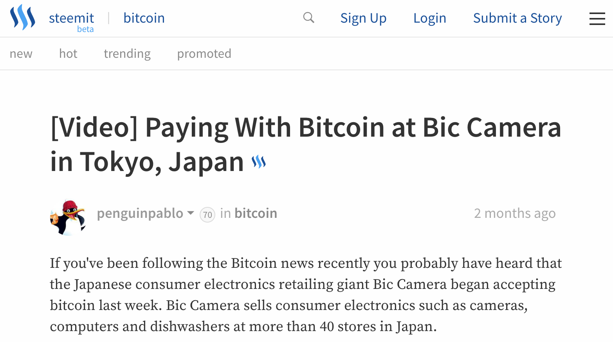
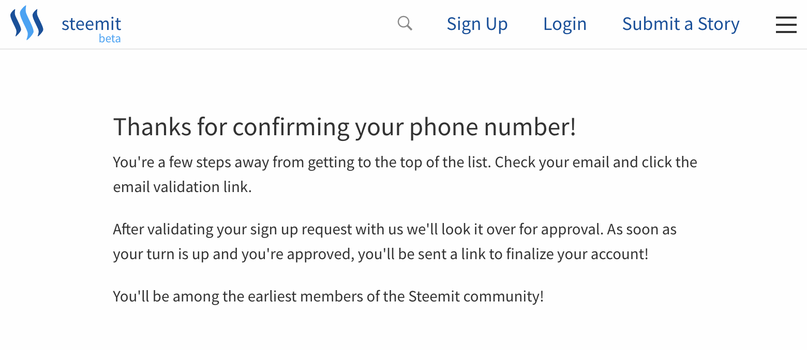
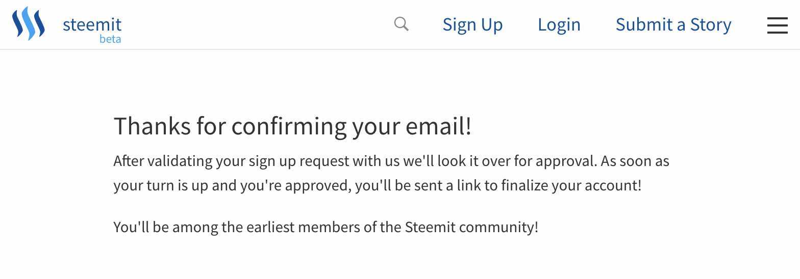

Steem Randomness...
So, yesterday, I’m having a nice healthy conversation on Facebook with some of my more geek-minded mates (H/T Jamie V. for the Aussie slang rip-off) about bitcoin and cryptocurrencies, in general. The whole thing started around a post about a kid who, at 18 years old, is now a millionaire, having invested in bitcoin back when the coins were only US$12 a pop. At present, you’ll have to pay roughly US$2,300 to get your hands on a bitcoin.
Bitcoin …a completely dumb idea, IMO. - Some Bloke
Then general sentiment toward bitcoin was quite cold in the discussion thread. One bloke (more Aussie slang, Jamie ;-)) even referred to bitcoin as a “completely dumb idea”. I asserted that, though there might be challenges in the United States as it relates to bitcoin adoption, other parts of the world have shown much more interest. Asia, for instance, is a part of the world that seems very open to the idea of digital currency, in general, and cryptocurrency, more specifically. But, even this notion was challenged. So I did some quick googling to get some evidence to help make my case.
As it turns out, the future of bitcoin in Asia didn’t look so bright back in 2014. Though the two large online Filipino merchants began accepting bitcoin payments, adoption as a payment mechanism for the rest of Southeast Asia seemed tepid. 2017 seems to mark a significant increase in Asian cryptocurrency adoption. China is currently testing a national cryptocurrency. And though Japan already has roughly 4,500 merchants accepting bitcoin payments, the partnership between Coincheck and Recruit Lifestyle is a game-changer. Enhancing the Recruit Lifestyle Airregi point-of-sale application to support bitcoin will enable consumers to spend their bitcoin at more than a quarter million food and retail locations throughout the country. I think the point was made. But still, Jamie is going to confirm this on his next trip. Stay tuned.
Steemit
Meanwhile, I decided to see how the Bic Camera bitcoin payment test, in Tokyo, was going. This led me to a reddit thread on the subject. The conversation was interesting but I looked further and found myself watching video of an actual bitcoin transaction at Bic Camera. (The video was also available on the reddit thread. But I was searching faster than I was reading.) All of this was cool but I noticed that I was not watching the video on youtube. I was watching it on this web site called steemit.com; which I had never heard of before today. So I started to explore.

What is Steemit?
Turns out, Steemit is super cool. As far as I can gather, steemit.com is a social network built on top of the steem.io platform. (I could be wrong about this. It could be that steem is just the name of the rewards/currency.) Its a social network that affords users the opportunity to earn cryptocurrency for their contributions. There is an algorithm that determines how much steem you get for posts, upvotes, comments, etc. The more steem you have, the more you can earn. And users have the option of converting a portion of their steem into other currencies: bitcoin, for instance.
Steem is a blockchain-based social media platform where anyone can earn rewards.
Naturally, there are many blockchain and cryptocurrency enthusiasts on Steemit. I immediately started consuming some great content. But, I didn’t want to just be a passive reader. I wanted to contribute to the conversations the same way that I do on GitHub or StackOverflow or even Facebook. I read one really good article EOS vs Ethereum for Dummies!. It was such a well-written and informative piece that I wanted to give the author an up-vote. In fact, it spawned such an educational discussion that I wanted to give a few of the commenters up-votes. However, you cannot participate unless you have an account. So, of course, I kicked off the account creation process.
Steemit is Not Anonymous
For whatever reason, I was under the impression that I could operate under a veil of anonymity. Those hopes were quickly dashed when Steemit requested my cell phone number so that it could text me a registration code.

Steemit Makes You Wait
My hopes for anonymity would not be the only ones that were dashed. So, too, were my hopes for instant gratification. It appears that I’ve been placed on some type of waiting list. At the very least, Steemit has some super-strenuous verification process. I’m not exactly sure what they are verifying, though. All they have to go on is a made-up username, a phone number, and an email address that may or may not be associated with a real identity. I hope they don’t make me wait too long. I’m ready to start contributing and earning.

Since I have to wait, though, I may as well watch this educational video that explains what exactly is a blockchain-based social media platform. Perhaps, you might want to do the same.
Resources
| Publication | Title |
|---|---|
| CNBC | This high school dropout who invested in bitcoin at $12 is now a millionaire at 18 |
| Bitcoin.com | Bitcoin to Be Accepted at 260,000 Stores in Japan by This Summer |
| Reddit - r/bitcoin | We Tested Bic Camera’s Bitcoin Payment System in Tokyo, How Did it Work? (Video) |
| Steemit - bitcoin | [Video] Paying With Bitcoin at Bic Camera in Tokyo, Japan |
| Tech In Asia | The state of Bitcoin in Southeast Asia |
| Futurism | China Becomes First Country in the World to Test a National Cryptocurrency |
| Steemit - eos | EOS vs Ethereum for Dummies! |